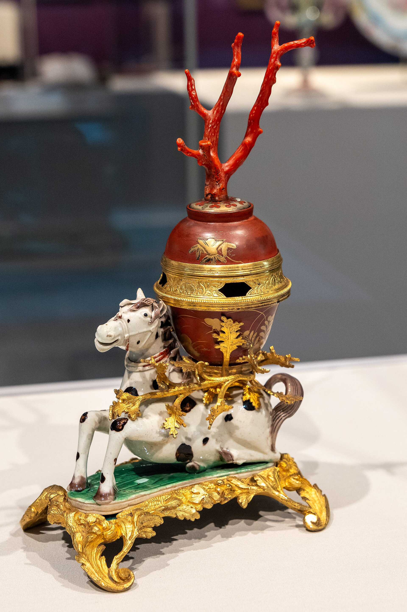

茶具专题
如果说中国茶叶讲的是山场、工艺和节气，那么茶器讲的就是另一套语言：火、土、窑、釉色、手感，以及“这一只杯子放在手里为什么会让茶变得更像样”。景德镇之所以重要，不只是因为它是瓷都，更因为它代表了一整套中国人理解瓷器、理解器物秩序、理解精致生活的方式。很多外国读者会先被茶本身吸引，但很快就会注意到：为什么中国人喝茶时这么在意杯子、盖碗、壶、盏、颜色和釉面？
这背后，其实不只是“器物好看”。而是中国茶桌一直都有一种很强的器物意识：茶器不是附属品，它本身就是风味、审美与身份表达的一部分。景德镇恰恰是理解这件事最好的入口之一。

景德镇在中国器物史中的地位，不只是产量大、名气高，更在于它长期成为“好瓷器”这一想象的中心。茶器尤其需要这种稳定、洁净、细腻、可控的材料语言：瓷器不夺香，不太强烈改变茶汤，容易清洗，也更能承载白、青、粉、素雅这些中国茶桌非常重视的视觉秩序。
对茶文化写作来说，景德镇还牵出另一条更深的线：官窑、审美标准、宫廷器物与民间使用之间的关系。很多人一说景德镇，想到的是瓷器本身；但其实你也可以借它去讲“什么样的器物会被看作高级”“为什么中国人会对釉面、胎体、线条这么敏感”。
像成化鸡缸杯这样的名字，之所以在今天仍然不断被提起，不只是因为它贵，而是因为它已经成了一个符号：它代表一种关于精致、小器、大名气、历史稀缺性的中国器物崇拜。对于普通茶桌来说，并不是每个人都需要真的拥有这种等级的器物，但这些名字塑造了大众对于“好瓷器”的想象上限。
也就是说，茶桌上的很多审美，其实一直都在更宏大的器物史阴影下运作：人们未必真的在喝官窑，但会在心里保留一套由它们塑造出来的判断标准。